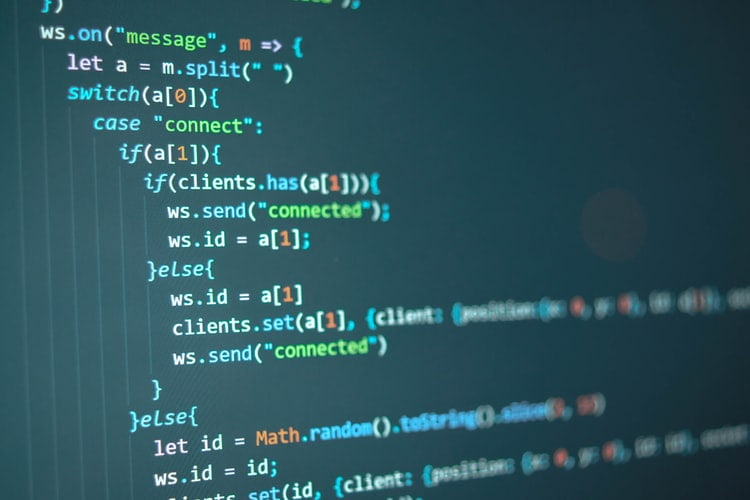
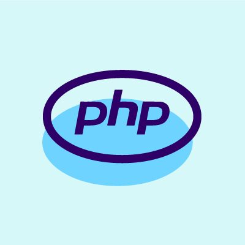
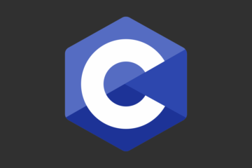

O que é Linguagem de Programação?
A linguagem de programação é um método padronizado, formado por um conjunto de regras sintáticas e semânticas,de implementação de um código fonte.

Quais as linguagens de programação que existem?
Java

Criada pela Oracle em 1991, essa linguagem de programação foi originalmente pensada para televisões. Java é considerada a linguagem mais popular no mundo, especialmente por ser utilizada para desenvolver aplicações Android e diversos sistemas e softwares em organizações.
PHP

O PHP tem como foco a criação de sites e aplicações Web. É uma linguagem de programação bastante comum.Estima-se que 1/3 da web a utilize,
especialmente por conta do grande número de sites desenvolvidos no WordPress, o CMS mais popular do mundo.
CSS

Abreviatura para “Cascading Style Sheets,” CSS é uma polêmica linguagem de programação focada em design, formatação e layout de aplicações Web.
Por que polêmica?
A verdade é que toda linguagem de programação possui fãs e haters. A polêmica a respeito do CSS é que muitos não a consideram uma linguagem de programação.No entanto, instituições referência no mercado, como TIOBE e Redmonk, historicamente desenvolvem rankings de classificação das linguagens, e o CSS figura entre as principais.
C

Criada no início da década de 1970, a linguagem de programação C é uma das mais antigas e que continua sendo usada em larga escala. O primeiro manual, com 800 páginas, foi lançado em 1978, mostrando desde cedo que a linguagem tem grande utilidade.A linguagem C tem como ponto forte a sua eficiência. Ela é bastante utilizada para desenvolver sistemas e softwares de base, embora também seja usada para o desenvolvimento de programas de computador.
C++

A linguagem de programação C é uma verdadeira referência no mercado de TI. Ela é tão influente no ramo que originou diversas variações, como C++, C# e Objetctive-C. Essas sucessoras utilizam conceitos da linguagem original, mas contam com novas funcionalidades.Por ser originada da C, a C++ é utilizada para as mesmas finalidades na Ciência da Computação e na programação. Também é interessante destacar o uso de C++ em jogos de videogames e aplicações muito usadas no dia a dia, como o Mozilla Firefox e produtos da Adobe.
C#

Mais uma das linguagens de programação originadas da C, a C# (C Sharp) foi criada em 2000 pela Microsoft e é uma das mais úteis para usar no .NET Framework. De acordo com o seu criador, Anders Hejlsberg, o C# é mais similar à C+++ do que à Java.
JavaScript

JavaScript (JS) é uma linguagem de programação extremamente popular e utilizada prioritariamente em aplicações web. Apesar do nome, o JavaScript não possui relações diretas com a linguagem de Programação Java, da Oracle.O JS roda na maioria das aplicações Web, mas também recebe muita oposição por retardar navegadores e, em alguns casos, expor usuários a vulnerabilidades de segurança.